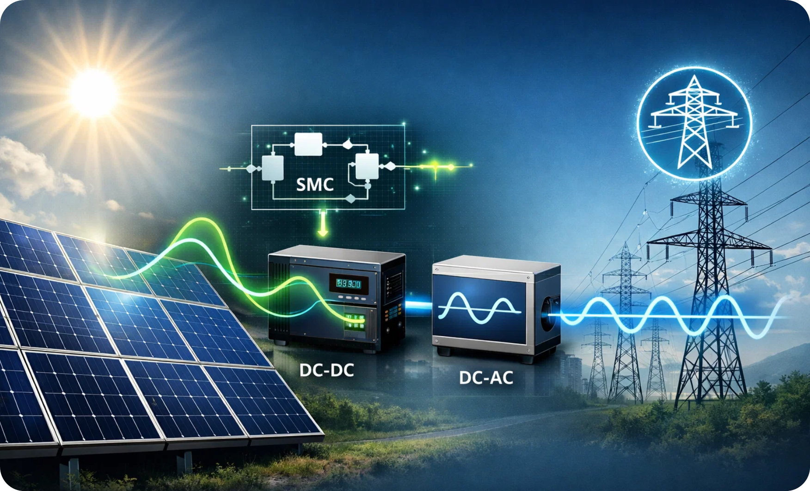
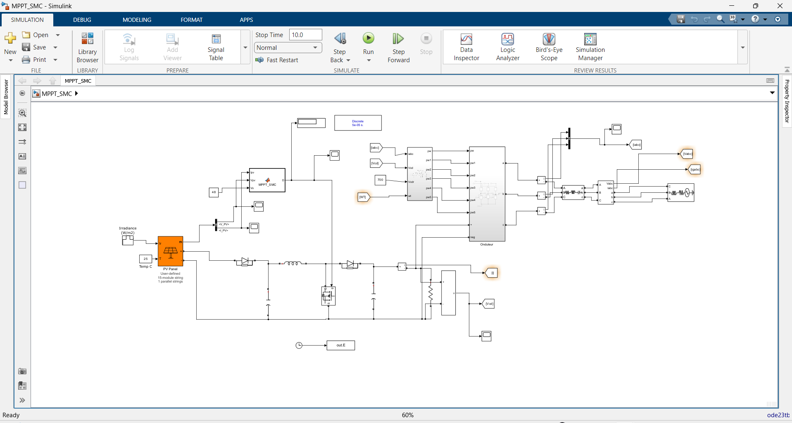
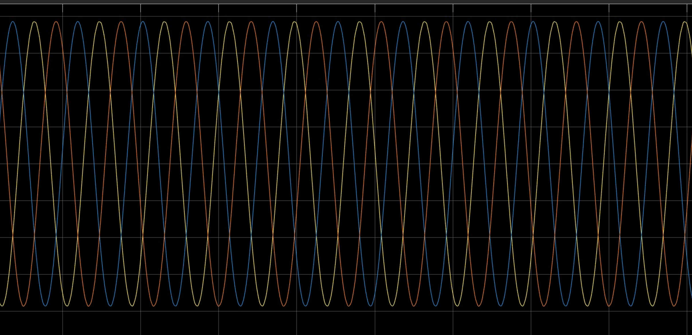

MATLAB / Simulink project
Grid-Connected Photovoltaic System with Sliding Mode Control
Modélisation et simulation d’un système photovoltaïque avec MPPT par commande par mode glissant.

About the project
Ce projet étudie la commande par mode glissant d’un système photovoltaïque connecté au réseau. L’objectif est d’extraire efficacement l’énergie fournie par le panneau PV et de l’injecter vers le réseau à travers une chaîne de conversion simulée dans MATLAB/Simulink.
La commande par mode glissant est une approche non linéaire qui contraint le système à évoluer sur une surface de glissement. Elle apporte une réponse rapide et une forte robustesse face aux variations du système. Le projet utilise cette approche pour la commande MPPT.
Project objectives
- Modéliser un générateur photovoltaïque connecté au réseau.
- Concevoir une commande MPPT par mode glissant pour rechercher le point de puissance maximale.
- Modéliser le convertisseur DC-DC et l’onduleur triphasé.
- Analyser le comportement du système dans MATLAB/Simulink.
- Vérifier la stabilité de la commande à l’aide de l’approche de Lyapunov.
Technologies used
System architecture
- PV generator — produces electrical energy according to irradiance and temperature inputs.
- DC-DC converter and MPPT-SMC — controls the duty cycle to operate the PV generator near its maximum power point.
- DC link and inverter — converts the DC energy into three-phase AC energy.
- Grid connection — connects the inverter output to the electrical network and measures the system signals.
MATLAB/Simulink simulation system
The MATLAB/Simulink model represents the complete photovoltaic conversion chain, including the PV panel, MPPT-SMC controller, DC-DC converter, DC link, inverter and grid connection. It provides a visual environment to simulate the system and analyse its electrical signals.

Simulation results
The simulation output shows three balanced sinusoidal waveforms, corresponding to the three-phase signals at the grid-connected inverter output.

Project presentation
Download the presentation to explore the photovoltaic model, the sliding mode control design and the MATLAB/Simulink simulation in more detail.
Download the presentationKey features
- MPPT by sliding mode control: tracks the photovoltaic maximum power point.
- Nonlinear control: adapted to nonlinear photovoltaic and power-electronic dynamics.
- Grid-connected simulation: models the full chain from PV generation to AC grid injection.
- Stability analysis: uses a Lyapunov-based approach for the control design.
- Simulink model: visual model for testing and analysing system behaviour.